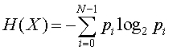

Shannon entropy was introduced by Claude E. Shannon in the 1948 paper "A Mathematical Theory of Communication". It's this equation:
Shannon entropy is the "average minimum number of bits needed to encode a string of symbols, based on the frequency of the symbols" (source).
Imagine that you and your friends have decided to communicate in an emoji-only protocol. Each emoji is a message. But some messages are more common than others – ex. 😀 is more commonly used among your friends than 🐭. Another way of saying that is that has a higher probability of appearing in a given message than 🐭.
So in this Shannon entropy calculator, our symbols are emoji, and each member of the set has a different probability of being represented in a given message. As you change the probabilities, make sure they add up to 1 (100%) since otherwise your probability distribution is incomplete.
You have 5 emoji to start with, and you can add and remove emoji to see how the number of items in the set impacts the entropy!